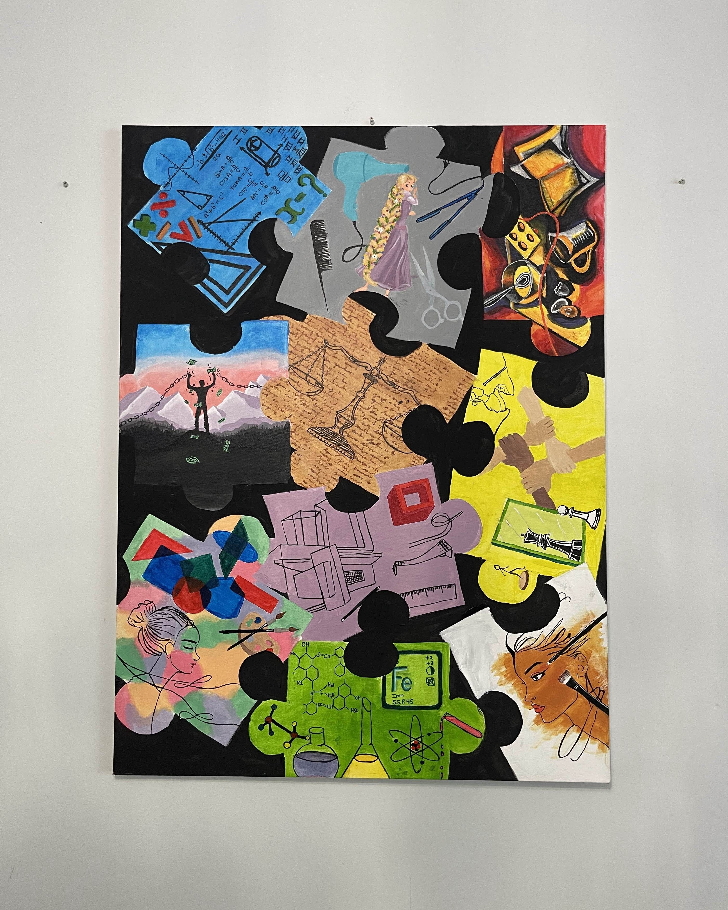
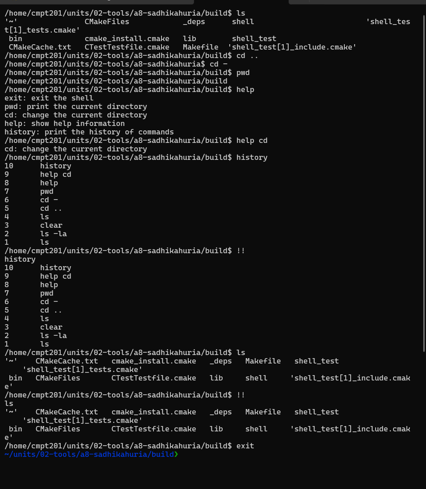

Here are some of the exciting projects I've worked on. Feel free to explore their details!

Capstone Puzzle Painting
A high school capstone project featuring a large painting of a puzzle. Each piece represented a desire, hobby, passion, or goal of mine at that time. The painting depicted my dreams as scattered puzzle pieces, waiting to be solved.
The painting consisted of 10 puzzle pieces, each uniquely designed to represent a part of my identity. It was a deeply personal artistic expression reflecting my aspirations and the journey towards fulfilling them.

Shell Implementation
A custom shell built in a Linux-based environment using low-level C programming. The shell uses functions like fork, exec, and wait to handle processes. Additionally, I implemented internal commands like cd, pwd, help, and exit, while most commands relied on external execution.
This shell was compiled using Clang in a Docker container on Windows. Signal handling was implemented to manage interruptions effectively. It was a great learning experience in process control and low-level system programming.